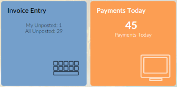
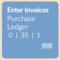
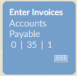
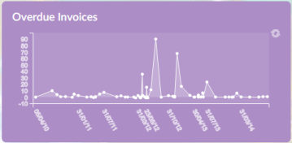

button are only available if a desktop has been set up for you. If no desktop is configured, you will be able to choose a
button are only available if a desktop has been set up for you. If no desktop is configured, you will be able to choose a The
Screenshot:
The desktop is configurable; if you have the necessary permissions you can choose what to include on your desktop.
NOTE
button are only available if a desktop has been set up for you. If no desktop is configured, you will be able to choose a
The sections below explain more about how to use the Desktop
The main area of the desktop contains custom
Some tiles are "smart tiles" which show summary information about the function (such as financial values or the number of items requiring attention).
 
On small smart tiles that show values, a tooltip explains what each number represents; move the mouse pointer over the number to show the tooltip. For more information, see Smart Tiles.
Some tiles can show information as a chart:

Click to refresh the chart. For more information, see Chart Tiles.
If a Desktop has been set up for you (and if you don't have a user home page set up), you see the Desktop when you log in to ), or press Ctrl+Shift+!.
To run a
For details of how to configure the desktop for other users, see